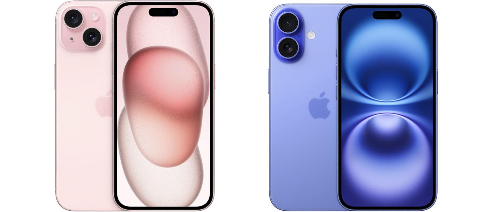
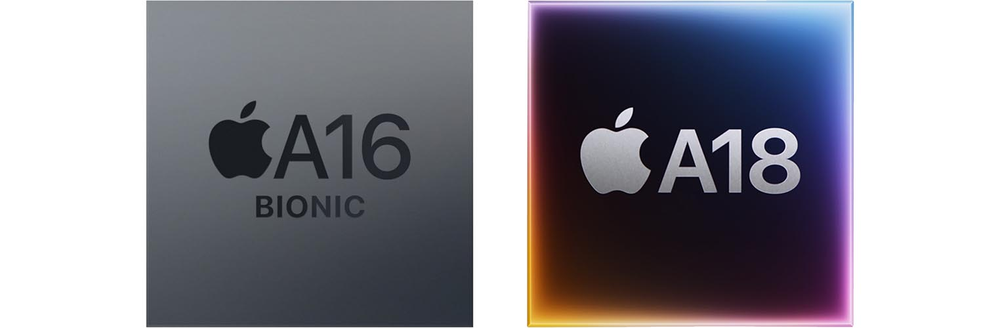
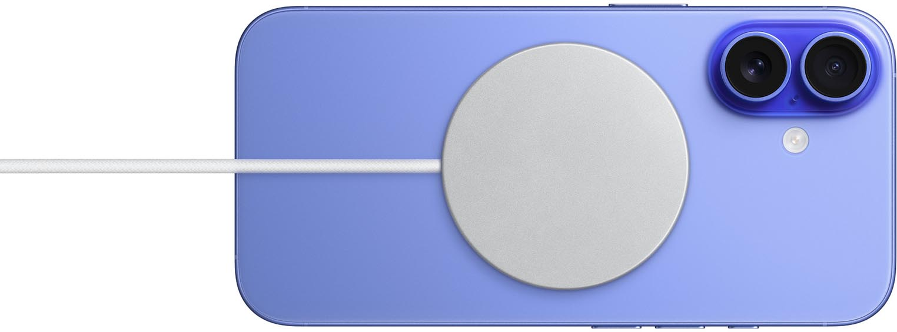
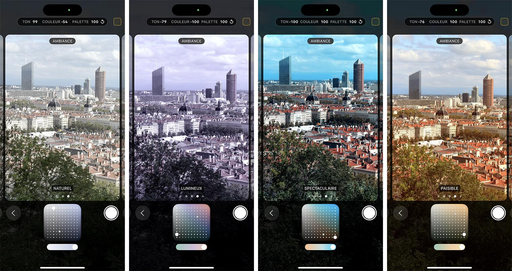

Différences principales entre iPhone 16 et iPhone 15
Les principales différences entre iPhone 16 et iPhone 15 :
Bien qu’il existe de nombreuses ressemblances entre les deux modèles, plusieurs différences majeures ressortent lorsque l’on examine de près leurs caractéristiques. Ces différences vont du design à la performance, en passant par les capacités de la caméra et l’autonomie de la batterie.

Comparaison visuelle entre les iPhone 16 et 15.
1. Processeur :
L’iPhone 16 est équipé du nouveau processeur A18, qui offre des performances améliorées de 30 % par rapport à l’A16 de l’iPhone 15. Cette puce plus rapide permet une exécution plus fluide des applications et un meilleur traitement des données pour des jeux et des applications exigeants.

Comparaison des puces A18 et A16.
2. Autonomie de la batterie :
Une autre différence notable entre les deux modèles est l’autonomie. L’iPhone 16 bénéficie d’une batterie plus grande de 4000 mAh, offrant jusqu’à 22 heures d’autonomie en lecture vidéo continue. En revanche, l’iPhone 15 propose seulement 20 heures d’autonomie.

3. Caméra et qualité d'image :
La caméra arrière de l’iPhone 16 est équipée d’un capteur de 48 MP, avec un mode nuit amélioré et un traitement d’image plus performant, permettant des photos de meilleure qualité, même dans des conditions de faible luminosité. L’iPhone 15, quant à lui, dispose d’un capteur de 12 MP.

Comparaison des photos prises avec l’iPhone 16 (à gauche) et l’iPhone 15 (à droite).